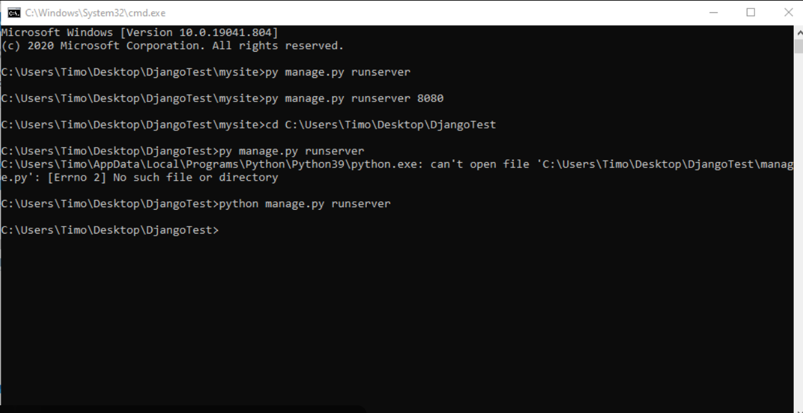
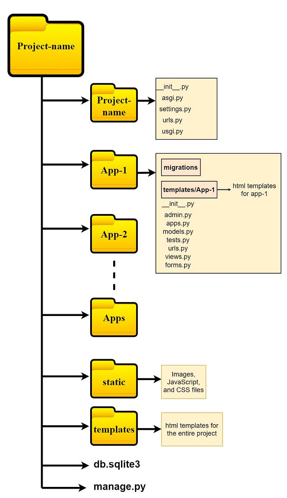
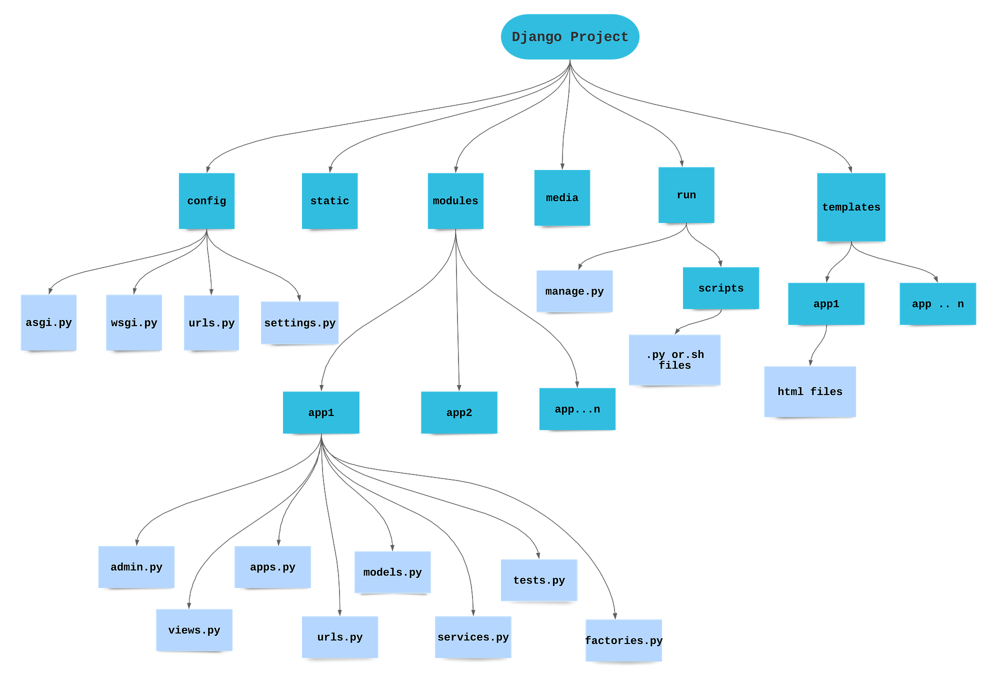

How Django works internally, server control, and professional project & app structure
This chapter explains how Django works internally, how to run and control the development server, and how projects and applications are structured in a professional Django workflow.
The Django development server is a lightweight web server used only for development and testing purposes.
manage.py exists)python manage.py runserver
By default, Django runs on:
http://127.0.0.1:8000/Sometimes port 8000 may already be in use, or you may want to run multiple projects simultaneously.
python manage.py runserver 8080Server will now run at:
http://127.0.0.1:8080/To stop the development server safely:
CTRL + CExamples:
Examples:
cd smspython manage.py startapp app1
app1/
│── migrations/
│ └── __init__.py
│── __init__.py
│── admin.py
│── apps.py
│── models.py
│── tests.py
│── views.py
When you create a Django project, Django automatically generates several important files. Each file has a specific role in running, configuring, and managing your application.
What it is:
Why it is needed:
Allows Django and Python to import files from this directory.
__init__.py tells Python:
“This folder is a package.”
What it is: The main configuration file of the Django project.
What it contains:
settings.py is like the settings app of a mobile phone
(Wi-Fi, display, security, apps).
What it is: URL routing file.
What it does:
/login, urls.py decides
which page or logic should run — like a road map directing traffic.
What it is: ASGI (Asynchronous Server Gateway Interface) configuration file.
Used for:
What it is: WSGI (Web Server Gateway Interface) configuration file.
Used for:
What it is: A command-line utility to manage the Django project.
What it can do:
Common Commands:
python manage.py runserver
python manage.py startapp appname
python manage.py makemigrations
python manage.py migratemanage.py is like a remote control for your Django project.
After creating an app, Django will not recognize it automatically.
You must register it inside settings.py.
urls.pyThis flow follows Django’s MVT (Model–View–Template) architecture.